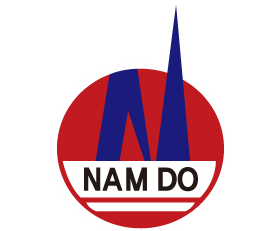

☰
☾

남도금형 스마트 품질 모니터링
품질분석 담당 김준희 차장
📊
엑셀 파일을 업로드하고 분석을 시작하세요.
여기를 탭하여 엑셀 파일을 업로드하세요.
또는 좌측 상단 ☰ 메뉴를 탭하세요
전체 요약
일자별 분석
품목별 분석
알림 & 리포트
SPC 관리도
수율 분석
기간 비교
품목 심층분석
AI 품질진단
📊 전체 요약
📅 일자별
📦 품목별
🔔 알림
📈 SPC
✅ 수율
🔄 기간비교
🔍 심층분석
🤖 AI진단
▶ 분석 시작
⚙
필터
📥
Excel
📄
PDF
↑
상단
✕